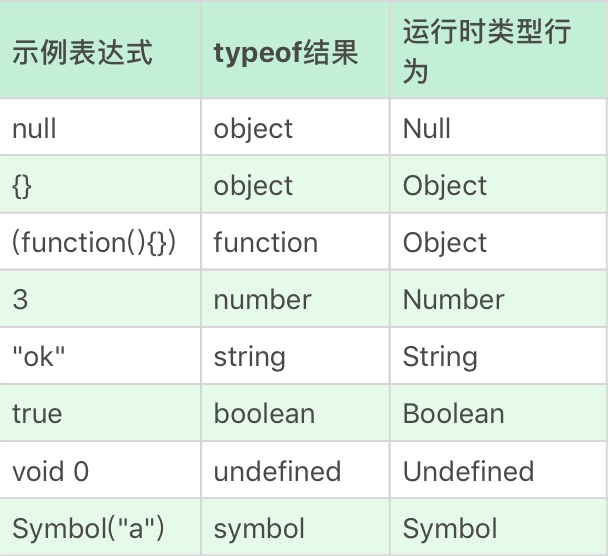

JavaScript中的类型
根据最新的语言标准，javascript规定了7种语言类型：
- Undefined
- Null
- Boolean
- String
- Number
- Symbol
- Object
但是在MDN中是这样描述的：
基本类型（基本数值、基本数据类型）是一种既非对象也无方法的数据。在 JavaScript 中，共有7种基本类型：string，number，bigint，boolean，null，undefined，symbol (ECMAScript 2016新增)。
Undefined
void运算把任意一个表达式变成undefined。
<a href="javascript: void(0)"></a>
常用以上代码来描述一个没有锚点的死链接。
往往应用void 0来做undefined使用的原因是Javascript中undefined是一个变量，并非关键字，可以被篡改。
Null
null是关键字，可以放心使用null关键字获取null的值。
Boolean
true 和 false。
String
String并非“字符串”，而是字符串的UTF16编码，所以charAt、charCodeAt、length等方法都是针对UTF16编码。所以字符串的最大长度实际上是受字符串的编码长度影响的,String 有最大长度是 253 - 1是指编码长度，并不是字符数。
Unicode
Unicode（又称统一码、万国码、单一码）是计算机科学领域里的一项业界标准，包括字符集、编码方案等。Unicode是为了解决传统的字符编码方案的局限而产生的，它为每种语言中的每个字符设定了统一并且唯一的二进制编码，以满足跨语言、跨平台进行文本转换、处理的要求。1990年开始研发，1994年正式公布。
UTF是Unicode的编码格式，
他具体定义 了 Unicode 字符在计算机中存取方法。
常见的就是UTF-16和UTF-8
UTF-16用两个字节表示一个Unicode转化格式，定长两个字节16bit，所以是UTF-16。
UTF-8因为很大一部分字符用一个字节就可以表示现在要的两个字节表示，UTF-8采用了一种变长的技术，每个编码区域有不同的字码长度，不同类型的字符可以是由1~6个字节组成，看前两字节的值来确定是什么类型的字符。
string是不可变的引用类型。他拥有值类型的特性。
Number
NAN编码中很少直接使用。通常都是在计算失败时，作为 Math 的某个方法的返回值出现的，比较NAN必须使用 Number.isNaN() 或 isNaN() 函数。
但是，请注意isNaN（）和Number.isNaN（）之间的区别：如果当前值是NaN，或者将其强制转换为数字后将是NaN，则前者将返回true。
Infinity 无穷大
-Infinity 负无穷大
-0和0在进行除法作为除数的时候符号带入计算。
经典问题0.1+0.2不能等于0.3，浮点数运算的精度问题导致等式左右不是严格相等，而是相差了个微小的值。
正确的比较方法是：
console.log( Math.abs(0.1 + 0.2 - 0.3) <= Number.EPSILON);
检查等式两边的差值是否小于最小精度才是正确比较浮点数的方法。
Symbol
这个英文单词就是象征和符号的意思,它是一切非字符串的对象key的集合。一个symbol值能作为对象属性的标识符,这是该数据类型仅有的目的。
Symbol() 函数会返回Symbol类型的值，该类型具有静态属性和静态方法。它的静态属性会暴露几个内建的成员对象；它的静态方法会暴露全局的Symbol注册，且类似于内建对象类，但作为构造函数来说它并不完整，因为它不支持语法："new Symbol()"。
var mySymbol = Symbol("my symbol");
每个从Symbol()返回的symbol值都是唯一的。
console.log(Symbol('foo') === Symbol('foo'));
// expected output: false
Object
在JavaScript中，对象的定义是“属性的集合”。属性分为数据属性和访问器属性，二者都是key-value结构，key可以是字符串或者Symbol类型。
JavaScript 中的几个基本类型，都在对象类型中有一个“亲戚”。它们是：
- Number
- String
- Boolean
- Symbol
所以3与new Number(3)是完全不同的值，一个是Number类型，一个是对象类型。
日常代码中可以把对象的方法在基本类型上使用
console.log("abc".charAt(0)); //a
而往常常理解为String类型有charAt方法，看来这个理解是错误的。
甚至可以在基本类型的亲戚对象的原型中添加方法，这样任何相同基本类型的变量都可以调用这个方法。
Symbol.prototype.hello = () => console.log("hello");
var a = Symbol("a");
console.log(typeof a); //symbol，a并非对象
a.hello(); //hello，有效
运算符提供了装箱操作，它会根据基础类型构造一个临时对象，使得我们能够在基础类型上条用对应对象的方法。（感觉类似一个原型链的应用）
值类型给引用类型叫装箱
引用类型给值类型叫拆箱
给我的理解是将多个属性打包成对象就是装箱，将对象的属性独立出来就是拆箱。
类型转换
==运算很臭，应该是没有意义去记住他的比较结果，只需要记住只用===来比较。
StringToNumber
字符串到数字的类型转换支持十进制、二进制、八进制和十六进制,还包括正负号科学计数法，可以使用大写或者小写的 e 来表示。
parseInt 和 parseFloat 并不使用这个转换，所以支持的语法跟这里不尽相同。在不传入第二个参数的情况下，parseInt 只支持 16 进制前缀“0x”，而且会忽略非数字字符，也不支持科学计数法。在一些古老的浏览器环境中，parseInt 还支持 0 开头的数字作为 8 进制前缀，这是很多错误的来源。所以在任何环境下，都建议传入 parseInt 的第二个参数，而 parseFloat 则直接把原字符串作为十进制来解析，它不会引入任何的其他进制。
Number 是比 parseInt 和 parseFloat 更好的选择。
NumberToString
当Number绝对值较大或者较小时，字符串为了保证不会过长会用科学记数法表示。
装箱转换
每一种基本类型 Number、String、Boolean、Symbol 在对象中都有对应的类，所谓装箱转换，正是把基本类型转换为对应的对象，它是类型转换中一种相当重要的种类。
Symbole函数无法使用new来调用，可以利用call方法来强迫装箱。
var symbolObject = (function(){ return this; }).call(Symbol("a"));
console.log(typeof symbolObject); //object
console.log(symbolObject instanceof Symbol); //true
console.log(symbolObject.constructor == Symbol); //true
我们可以用 console.log 看一下 symbolObject 的 type of，它的值是 object，我们使用 symbolObject instanceof 可以看到，它是 Symbol 这个类的实例，我们找它的 constructor 也是等于 Symbol 的，所以我们无论从哪个角度看，它都是 Symbol 装箱过的对象，这里再次应用了js原型。
装箱机制会频繁产生临时对象，在一些对性能要求较高的场景下，我们应该尽量避免对基本类型做装箱转换。
使用内置的 Object 函数，我们可以在 JavaScript 代码中显式调用装箱能力。
var symbolObject = Object(Symbol("a"));
console.log(typeof symbolObject); //object
console.log(symbolObject instanceof Symbol); //true
console.log(symbolObject.constructor == Symbol); //true
拆箱转换
在 JavaScript 标准中，规定了 ToPrimitive 函数，它是对象类型到基本类型的转换（即，拆箱转换）JavaScript 对象转换到基本类型值算法 ToPrimitive。对象到 String 和 Number 的转换都遵循“先拆箱再转换”的规则。通过拆箱转换，把对象变成基本类型，再从基本类型转换为对应的 String 或者 Number。拆箱转换会尝试调用 valueOf 和 toString 来获得拆箱后的基本类型。如果 valueOf 和 toString 都不存在，或者没有返回基本类型，则会产生类型错误 TypeError。
var o = {
valueOf : () => {console.log("valueOf"); return {}},
toString : () => {console.log("toString"); return {}}
}
o * 2
// valueOf
// toString
// TypeError
进行 o*2 这个运算的时候，先执行了 valueOf，接下来是 toString，最后抛出了一个TypeError，拆箱转换失败了。
var o = {
valueOf : () => {console.log("valueOf"); return {}},
toString : () => {console.log("toString"); return {}}
}
String(o)
// toString
// valueOf
// TypeError
到 String 的拆箱转换会优先调用 toString。
在 ES6 之后，还允许对象通过显式指定 @@toPrimitive Symbol 来覆盖原有的行为.
var o = { valueOf : () => {console.log("valueOf"); return {}}, toString : () => {console.log("toString"); return {}} } o[Symbol.toPrimitive] = () => {console.log("toPrimitive"); return "hello"} console.log(o + "") // toPrimitive // hello
补充
除了这七种语言类型，还有一些语言的实现者更关心的规范类型。
- List 和 Record： 用于描述函数传参过程。
- Set：主要用于解释字符集等。
- Completion Record：用于描述异常、跳出等语句执行过程。
- Reference：用于描述对象属性访问、delete 等。
- Property Descriptor：用于描述对象的属性。
- Lexical Environment 和 Environment Record：用于描述变量和作用域。
- Data Block：用于描述二进制数据。
标准中规定了运行时数据类型； 另一方面，JavaScript 语言中提供了 typeof 这样的运算，用来返回操作数的类型，但 typeof 的运算结果，与运行时类型的规定有很多不一致的地方。

JavaScript 之父本人也在多个场合表示过，typeof 的设计是有缺陷的，只是现在已经错过了修正它的时机。